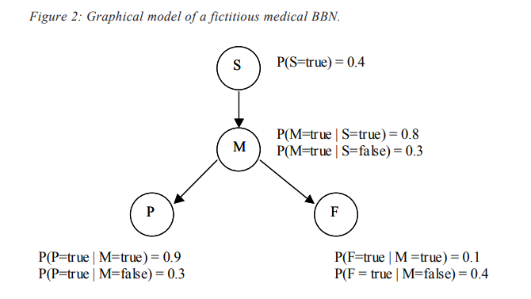

271-275
Bayesian Data Mining and Knowledge Discovery

show signs of pain in the chest reflected by the high probability assigned to this case.
On the other hand, given a heart attack, the patient is not likely to have tingling fingers;
the low conditional probability value describes such a state. We see that the events P
and F have a common cause (M) but do not depend on S. Applying the product rule to
the graph above, we may decompose the joint probability of one case (P(S,M,P,F) =
P(S=true, M=true, P=true, F=true)) into a set of independent parent-child contributions
as P(S, M, P, F) = P(S) * P(M|S) * P(P|M) * P(F|M). Having specified the model we can
calculate the prior probabilities of each node in the network. For example P(M=true) can
be calculated as:
P(M=true) = P(M|S=true)*P(S=true) + P(M|S=false)*P(S=false) = 0.5
Then P(P=true) and P (F=true) are calculated as:
P(P=true) = P(P|M=true)*P(M=true) + P(P|M=false)*P(M=false) = 0.6
P(F=true) = P(F|M=true)*P(M=true) + P(F|M=false)*P(F=false) = 0.25
The previous probabilities corresponded to the beliefs that we had on each of the
network attributes (nodes) without considering any additional evidence. As before, we may
wish to find the most probable hypothesis given a set of observations. In this case, we might
want to determine whether it is more likely that the patient has a heart attack or not, given the
fact that he/she has signs of chest pain. For such purposes, we need to compare
P(M=true|P=true) and P(M=false|P=true): if the first conditional probability is greater, we infer
that the patient has a heart attack; if it is smaller we accept the hypothesis that the patient
does not have a heart attack4
. To calculate these posterior probabilities, we apply conditional
probability in the following way
P(M=true|P=true) = P(P true)
P(M true,P true)
=
= =
P(M=false|P=true) = P(P true)
P(M false,P true)
=
= =
The denominator is common to both expressions and can be eliminated for comparison
purposes. The remaining criteria can be rewritten as:
Most probable Hypothesis = argmax [P(M= true, P= true), P(M= true, P= true) ]
We can calculate both P(M= true, P= true) and P(M= true, P= true) from the conditional
probability tables associated with each node:
P(M=true,P=true) = P(S=true, M=true, P=true, F=true) +
P(S=true, M=true, P=true, F=false) +
P(S=false, M=true, P=true, F=true) +
P(S=false, M=true, P=true, F=false)
P(M=false,P=true) = P(S=true, M=false, P=true, F=true) +
P(S=true, M=false, P=true, F=false) +
P(S=false, M=false, P=true, F=true) +
P(S=false, M=false, P=true, F=false)
It should be noted that each joint probability in the above expressions is calculated by
applying the causal model depicted in Figure 2. For example, if we wish to calculate P(S=true,
M=true, P=true, F=true) :
P(S=true, M=true, P=true, F=true) = P(S) * P(M|S) * P(P|M) * P(F|M)
= 0.4 * 0.8 * 0.9 * 0.1 = 0.0288
As indicated before, because a BBN determines a joint probability distribution for
the set of attributes in the network, the Bayesian network can—in principle—be used to
compute any probability of interest. For problems with many variables, however, this
approach is not practical. Several researchers have developed probabilistic inference
algorithms that apply variations of the conditional independence concept. Pearl (1988)
and Lauritzen and Spieglelhalter (1988) developed the two most well known algorithms.
Pearl’s algorithm, for instance, is based on a message-passing concept. The new
evidence is propagated over the network by sending messages to neighbor nodes.
Through the arcs —acting as communication channels—the nodes send messages
providing information about the joint probability distribution that is defined by the
network and the evidence obtained so far.
Training Bayesian Belief Networks
Two questions arise in formulating BBNs: (1) how to determine the underlying
causal model expressed as a graph, which includes the specification of the conditional
independence assumptions among the attributes of the model? and (2) how to determine
the conditional probability distributions that quantify the dependencies among the
attributes in the model? In the following, we address these two questions, while noting
that a detailed review of the topic is beyond the scope of this chapter.
As described by Ramoni and Sebastiani (1999), BBNs were originally supposed to
rely on domain experts to supply information about the conditional independence
graphical model and the subjective assessment of conditional probability distributions
that quantify the dependencies among attributes. However, the statistical foundation of
BBN soon led to the development of methods to extract both structure and conditional
probability estimations from data, thus turning BBNs into powerful data analysis tools.
Learning BBNs from data is a rapidly growing field of research that has seen a great deal
of activity in recent years, including work by Lam and Bachus (1994), Friedman and
Goldszmidt (1996), and Heckerman, Geiger and Chickering (1994).
There are a number of possible scenarios to consider when addressing the problem
of training a BBN:
– When the structure of the BBN is known and all the attributes for all the instances
are observable in the training examples, learning the conditional probabilities is
quite straightforward. We simply estimate the conditional probabilities by maximizing the likelihood of the training data, as in the case of the Naive Bayes Classifier
(estimating relative frequencies with zero-frequency corrections, for example).
– When the structure of the BBN is known but not all of the variables are observable
(partially or totally) in the training data, we come across a more complicated
problem. In such a case, we can resort to algorithms intended to deal with missing
values, such as the Estimation Maximization (EM) algorithm. For a detailed
explanation on the EM algorithm and its use in training BBNs, see Mitchell (1997).
Another approach is assimilating the problem to the case of estimating the weights
of the hidden nodes in a neural network. In that case, a gradient ascent approach
can be used, where the algorithm searches through the space of hypotheses
corresponding to the set of all possible entries in the conditional probability table.
– When the structure of the network is not known, we face a problem of model
selection, typically a much more complicated problem than the two previously
described cases. The goal is to find the network, or group of networks, that best
describes the probability distribution over the training data. This optimization
process is implemented in practice by using heuristic search techniques to find the
best model over the space of possible BBNs. A scoring system is commonly used
for choosing among alternative networks. Lam and Bachus (1994), for example,
have used a score based on the minimum description principle (MDL), an information theoretic perspective of Occam’s Razor principle according to which simple,
sparse models should be preferred to complex overfitted models.
MARKOV CHAIN MONTE CARLO
TECHNIQUES
Markov Chain Monte Carlo (MCMC) techniques have been mainly responsible for
the current momentum gained by Bayesian methods, since its application has enabled
the use of A vast range of Bayesian models that had been previously deemed as
intractable. With complicated models, it is rare that the posterior distribution can be
computed directly. The simulation techniques described in the previous section are only
adequate when dealing with low-dimensional problems but cannot be successfully
applied in many real-world problems. This is where MCMC excels. MCMC is intrinsically
a set of techniques for simulating from multivariate distributions. In order to introduce
the topic, we need to provide some definitions regarding stochastic processes and
Markov chains.
Markov Chains
A random or stochastic process is a family of random variables {X(t), t∈T} defined
over a given probability space and indexed by a parameter t that varies over an index set T.
The values assumed by X(t) are called states. If T is discrete then the process is called a
discrete-time process and is denoted as {Xn, n=1,2,..,n}. X1 is the initial state of the process
and Xn is the state of the process at time n.
A Markov chain is a special case of a discrete-time process in which the following rule
applies: At any given time n, the probabilities of the future state n+1 depend only on the
current state Xn. This is expressed as:
P(Xn+1 = xn+1 | X1=x1
,X2=x2
,..,Xn=xn
) = P(Xn+1 = xn+1 | Xn=xn
)
In other words, if we generate a sequence of random variables X1, X2, .., Xn, such that
the next state Xn+1 is a sample from a distribution that depends only on the current state
of the chain, Xn, and does not depend on the rest of the chain X1, X2,..Xn-1, this sequence
is called a Markov chain.
The conditional probability P(Xn+1| Xn) is known as the transition kernel of the
Markov chain. When the transition kernel is independent of n, then it is said to be
stationary, and the process is referred to as a time-homogeneous Markov chain. A finite
Markov chain is such that there are only a finite number k of possible states s1,s2,..,sk,
and the process must be in one of these k states. If any of these states can be reached
from any other state in a finite number of moves, the chain is said to be irreducible.
Markov Chain Simulation
The idea of Markov Chain simulation is to simulate a random walk in the parameter
space that converges to a stationary distribution that is the target multivariate distribution
π(x) that we want to simulate (typically a joint posterior distribution). It is possible to construct
a Markov chain such that this stationary distribution is the target distribution π(x). Therefore,
over time the draws Xn will look more and more like dependent samples from the target
distribution. After hundreds of iterations, the chain will gradually forget the starting position
X1, and it will gradually converge to the stationary distribution.
Several methods have been developed for constructing and sampling from transition
distributions. Among them, the Metropolis algorithm and the Gibbs sampler are among the
most powerful and popular methods currently in use. For a more complete description, see
Gelman et al. (1995) and Neal (1993). Also, a complete set of lectures on this topic can be found
in Rodriguez (1999).
The Metropolis Algorithm
The original algorithm was developed by Metropolis in 1953 with the purpose of
simulating the evolution of a system in a heat bath towards thermal equilibrium. In its rather
recent application to statistics, the Metropolis algorithm creates a sequence of points (X1,
X2, ...) whose distributions converge to the target distribution π(x). Let q(y| x) be the
jumping (proposal) distribution. In the Metropolis algorithm, this jumping distribution must
be symmetric, that is, q(x|y) = q(y|x) for all X,Y, and n. The algorithm proceeds as follows:
1. Given the current position Xn, the next candidate state is chosen by sampling a
point Y from the proposal distribution q(y|x)
2. The ratio of the densities is calculated as r = (x )
(y)
π n
π
3. Calculate α = min(r,1)
1
4. With probability α accept the candidate value and set Xn+1 = Y; otherwise reject
Y and set Xn+1= Xn
5. Go to step 1
It can be proved that for a random walk on any proper distribution with positive
probability of eventually jumping from a state to any other state, the Markov chain will
have a unique stationary distribution. It can also be shown that the target distribution
is the stationary distribution of the Markov chain generated by the Metropolis algorithm
(see Gelman & Gelman, 1995).
CONCLUDING REMARKS
In this chapter, we have attempted to provide an overview on Bayesian methods
as applied to the field of Data Mining. In doing so, we have deliberately focused on
reviewing the most relevant concepts, techniques, and practical issues. Over the last few
years, Bayesian data mining has emerged as a prominent modelling and data analysis
approach from which both academicians and practitioners can benefit. We envisage that
Bayesian Data Mining and Knowledge Discovery will continue to expand in the future,
both from a theoretical and a practical applications perspective.